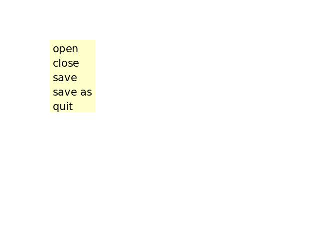

Note
Click here to download the full example code
Menu¶
Out:
100 371 91 29
100 342 91 29
100 313 91 29
100 284 91 29
100 255 91 29
import numpy as np
import matplotlib.colors as colors
import matplotlib.patches as patches
import matplotlib.mathtext as mathtext
import matplotlib.pyplot as plt
import matplotlib.artist as artist
import matplotlib.image as image
class ItemProperties:
def __init__(self, fontsize=14, labelcolor='black', bgcolor='yellow',
alpha=1.0):
self.fontsize = fontsize
self.labelcolor = labelcolor
self.bgcolor = bgcolor
self.alpha = alpha
self.labelcolor_rgb = colors.to_rgba(labelcolor)[:3]
self.bgcolor_rgb = colors.to_rgba(bgcolor)[:3]
class MenuItem(artist.Artist):
parser = mathtext.MathTextParser("Bitmap")
padx = 5
pady = 5
def __init__(self, fig, labelstr, props=None, hoverprops=None,
on_select=None):
artist.Artist.__init__(self)
self.set_figure(fig)
self.labelstr = labelstr
if props is None:
props = ItemProperties()
if hoverprops is None:
hoverprops = ItemProperties()
self.props = props
self.hoverprops = hoverprops
self.on_select = on_select
x, self.depth = self.parser.to_mask(
labelstr, fontsize=props.fontsize, dpi=fig.dpi)
if props.fontsize != hoverprops.fontsize:
raise NotImplementedError(
'support for different font sizes not implemented')
self.labelwidth = x.shape[1]
self.labelheight = x.shape[0]
self.labelArray = np.zeros((x.shape[0], x.shape[1], 4))
self.labelArray[:, :, -1] = x/255.
self.label = image.FigureImage(fig, origin='upper')
self.label.set_array(self.labelArray)
# we'll update these later
self.rect = patches.Rectangle((0, 0), 1, 1)
self.set_hover_props(False)
fig.canvas.mpl_connect('button_release_event', self.check_select)
def check_select(self, event):
over, junk = self.rect.contains(event)
if not over:
return
if self.on_select is not None:
self.on_select(self)
def set_extent(self, x, y, w, h):
print(x, y, w, h)
self.rect.set_x(x)
self.rect.set_y(y)
self.rect.set_width(w)
self.rect.set_height(h)
self.label.ox = x + self.padx
self.label.oy = y - self.depth + self.pady/2.
self.hover = False
def draw(self, renderer):
self.rect.draw(renderer)
self.label.draw(renderer)
def set_hover_props(self, b):
if b:
props = self.hoverprops
else:
props = self.props
r, g, b = props.labelcolor_rgb
self.labelArray[:, :, 0] = r
self.labelArray[:, :, 1] = g
self.labelArray[:, :, 2] = b
self.label.set_array(self.labelArray)
self.rect.set(facecolor=props.bgcolor, alpha=props.alpha)
def set_hover(self, event):
"""
Update the hover status of event and return whether it was changed.
"""
b, junk = self.rect.contains(event)
changed = (b != self.hover)
if changed:
self.set_hover_props(b)
self.hover = b
return changed
class Menu:
def __init__(self, fig, menuitems):
self.figure = fig
fig.suppressComposite = True
self.menuitems = menuitems
self.numitems = len(menuitems)
maxw = max(item.labelwidth for item in menuitems)
maxh = max(item.labelheight for item in menuitems)
x0 = 100
y0 = 400
width = maxw + 2*MenuItem.padx
height = maxh + MenuItem.pady
for item in menuitems:
left = x0
bottom = y0 - maxh - MenuItem.pady
item.set_extent(left, bottom, width, height)
fig.artists.append(item)
y0 -= maxh + MenuItem.pady
fig.canvas.mpl_connect('motion_notify_event', self.on_move)
def on_move(self, event):
draw = False
for item in self.menuitems:
draw = item.set_hover(event)
if draw:
self.figure.canvas.draw()
break
fig = plt.figure()
fig.subplots_adjust(left=0.3)
props = ItemProperties(labelcolor='black', bgcolor='yellow',
fontsize=15, alpha=0.2)
hoverprops = ItemProperties(labelcolor='white', bgcolor='blue',
fontsize=15, alpha=0.2)
menuitems = []
for label in ('open', 'close', 'save', 'save as', 'quit'):
def on_select(item):
print('you selected %s' % item.labelstr)
item = MenuItem(fig, label, props=props, hoverprops=hoverprops,
on_select=on_select)
menuitems.append(item)
menu = Menu(fig, menuitems)
plt.show()
Keywords: matplotlib code example, codex, python plot, pyplot Gallery generated by Sphinx-Gallery